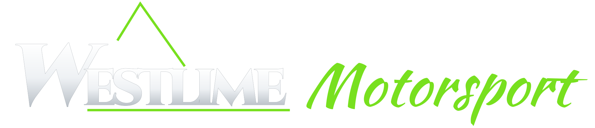

Works with YouTube Live, Twitch, HLS (.m3u8) and WebRTC (WHEP) links. How to set up the cameras
Whoever opens it sees the cameras exactly as you've set them up: same layout, cars and rotation. They can only go full screen and turn sound on or off.
Add at least one camera first.
Pick one of these for each camera under Change: the feed switches to that car's stream and shows its details. Add cars here as the team grows. The list is saved on this device.
Pick a past broadcast to play in this feed. Back to live on the feed returns to the live stream.
No Twitch channels yet. Give a car its Twitch link under Add, edit or remove cars.
To list replays here, the app needs a free Twitch app ID (one-off, about 5 minutes): on a computer or in Safari's desktop mode, go to dev.twitch.tv/console/apps → Register Your Application, name it e.g. "Westlime Split Screen", add the OAuth Redirect URL , pick Website Integration, then copy its Client ID here. Twitch needs two-factor sign-in turned on for your account first.
Each GoPro joins the Starlink Wi-Fi and sends a live stream to the internet. Paste each camera's watch link into one half of this screen. Watch it on any phone, tablet or laptop, anywhere.
rtmp://a.rtmp.youtube.com/live2/
Run MediaMTX on a small cloud server with an https address. Point the cameras at rtmp://your-server/truck1 and rtmp://your-server/truck2, then paste https://your-server:8889/truck1 and …/truck2 here (WebRTC). An …/index.m3u8 link from its HLS port works too, with a few seconds more delay.
rtmp://your-server/truck1
rtmp://your-server/truck2
https://your-server:8889/truck1
…/truck2
…/index.m3u8